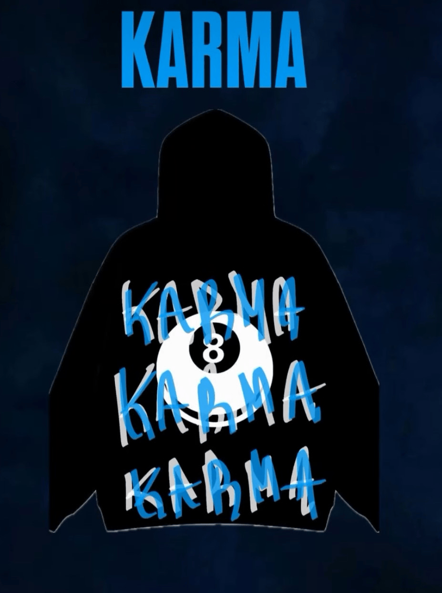

KARMA

HISTORIA
Quería crear algo único, algo que hablara de su estilo personal y de su visión del mundo. Así que, con algo de dinero ahorrado y una idea clara en su mente, comenzó un negocio: KARMA una tienda online de sudaderas personalizadas.
El primer paso fue encontrar un proveedor de sudaderas de buena calidad, que no fueran demasiado caras pero que tuvieran la durabilidad que buscaba para su producto. No quería ofrecer solo sudaderas con estampados genéricos, sino algo que pudiera personalizarse según el gusto de cada cliente. Comenzó a buscar ilustradores y diseñadores gráficos que pudieran ayudarlo a crear diseños únicos.
Al principio, la tienda no tuvo mucho éxito. Se pasaba horas diseñando, tomando fotos y subiendo contenido a las redes sociales. Sin embargo, las ventas no llegaban como esperaba. Pasaban días en los que no se recibía ni un solo pedido, y la duda comenzó ¿había tomado la decisión correcta?
MISION
En KARMA, nos dedicamos a crear sudaderas personalizadas de alta calidad que no solo reflejan el estilo único de cada persona, sino también sus emociones y experiencias. Nuestra misión es ofrecer prendas auténticas que permitan a nuestros clientes expresarse de manera creativa, mientras promovemos un enfoque sostenible y responsable con el medio ambiente. A través de la personalización y la conexión genuina con nuestra comunidad, buscamos que cada sudadera sea mucho más que una prenda, sino un reflejo de la personalidad de quienes las usan.
VISION
Ser una marca líder en moda personalizada que inspire a las personas a vestirse de manera auténtica y significativa. Queremos ser reconocidos no solo por la calidad de nuestras sudaderas, sino también por nuestra capacidad de conectar emocionalmente con nuestros clientes, fomentando la creatividad y la individualidad. Aspiramos a ser un referente en sostenibilidad y responsabilidad social, ofreciendo productos que no solo sean únicos, sino que también contribuyan positivamente al mundo que nos rodea.
©2025.Derechos reservados
Desarrollado por vargas Martinez Julio
vargas Martinez Julio